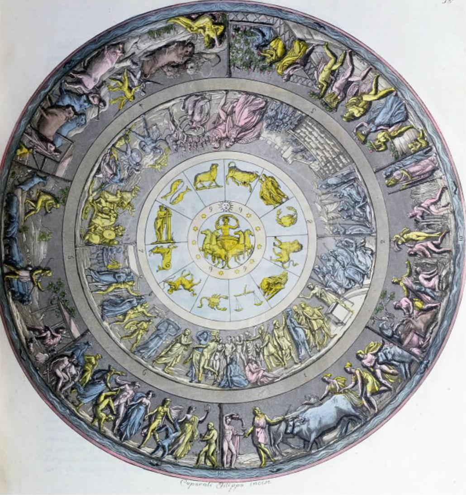
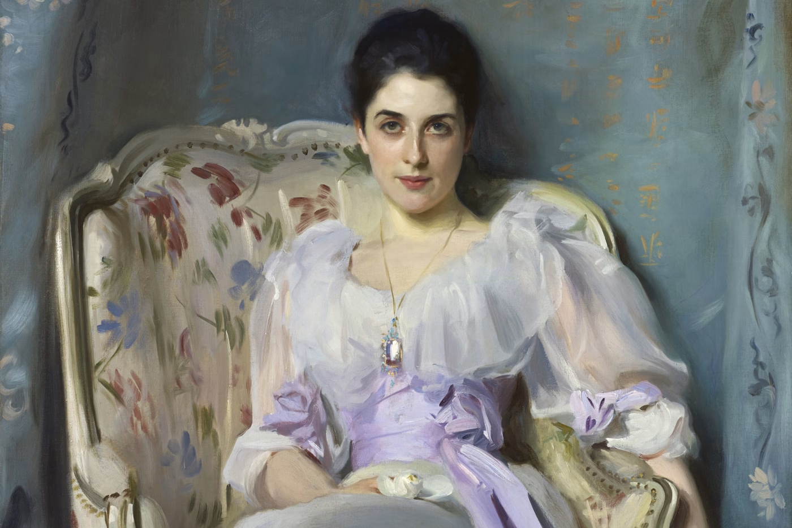
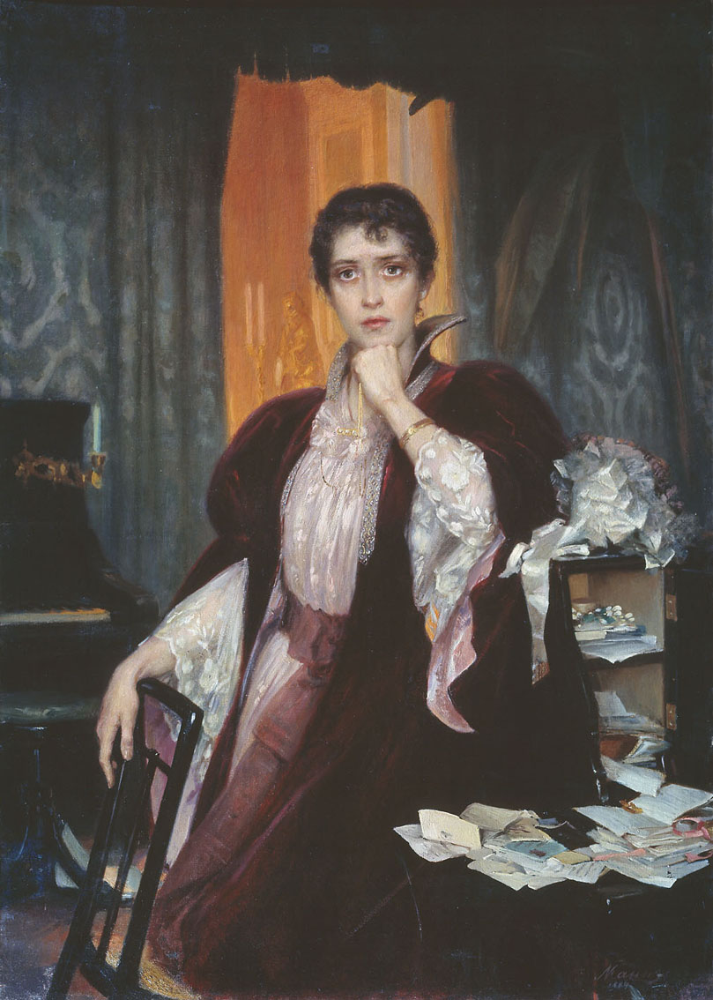

Ekphrasis

Ekphrasis is the vivid verbal representation of a work of visual art. Derived from the Greek “ek” (“out”) and “phrazein” (“to speak”), it describes the act of rendering an image fully in language. In modern literary usage, ekphrasis translates a static visual object into dynamic verbal description, allowing the reader to “see” through words alone. In the case of fictional artworks, such as the paintings in Anna Karenina, the reader cannot verify them against a real object and must rely entirely on narration. This makes ekphrasis not only descriptive but interpretive, since it reflects the emotions and perspectives of the characters who view the artwork.
Tolstoy uses ekphrasis to structure the reader’s perception of characters, either by representing them in images or by filtering artworks through their own acts of interpretation. Rather than offering neutral descriptions, he consistently filters artworks through observers' consciousness, turning each image into a site of interpretation and emotional projection. One of the earliest examples appears in Part 3, Chapter 14, when Karenin looks at Anna’s portrait. The image is not presented objectively but as something that confronts him. Anna’s “inscrutable eyes” seem to fix him with a “mocking, brazen stare,” and even the carefully painted details, such as her lace and rings, strike him as “defiant” (Tolstoy 288). The portrait becomes unbearable, causing him to shudder and turn away. The painting itself does not change, but Karenin’s perception transforms it into a moral accusation. Through ekphrasis, the image reflects his internal conflict and sense of betrayal. One of the novel’s most complex engagements with ekphrasis occurs in Part 5, during the visit of Anna, Vronsky, and Golenishchev to the painter Mikhailov in Italy. However, the episode does not present a fully unified or conventional ekphrasis, as the reader never receives a complete visual description of the painting. His large painting of Christ before Pilate is first seen through the artist’s own perspective, shaped by years of labor and emotional investment. Instead, the reader encounters fragmented interpretations offered by Mikhailov, Anna, Golenishchev, and Vronsky, gradually constructing an image of the painting through their differing perspectives. When Mikhailov attempts to see the work through the eyes of his visitors, it suddenly appears “trite… stale… and even badly-painted,” resembling earlier religious works (Tolstoy 474–75). This shift shows how meaning is not fixed in the artwork itself but depends on perspective. The visitors’ reactions further reveal this instability. Golenishchev offers an intellectual interpretation of Pilate, focusing on duality, which pleases the artist despite its superficiality. Anna focuses on the emotional expression of Christ, while Vronsky admires the “technique,” exclaiming, “How those figures in the background stand out! There is technique for you” (Tolstoy 476). His response frustrates Mikhailov because it reduces the painting to technical skill rather than expressive depth. Through these differing reactions, ekphrasis becomes a tool for characterization. A smaller painting of two boys fishing provides a contrast. The scene is described in quiet detail: one boy intent on his line, the other lying in the grass, “staring at the water with dreamy… eyes” (Tolstoy 478). Initially dismissed by the artist, the painting gains value through renewed attention, suggesting that artistic meaning can shift depending on perception. This focus on ordinary life recalls realist traditions, particularly the Peredvizhniki movement, emphasizing emotional authenticity over grandeur. Ekphrasis also shapes the portraits of Anna. When Mikhailov paints her, he captures an expression that even Vronsky had not fully recognized. Confronted with the finished portrait, Vronsky feels both admiration and unease, thinking that one “would have to know her and love her” as he does to uncover such an expression (Tolstoy 479). Yet the narration suggests that the portrait itself reveals this truth to him. Art, in this moment, surpasses personal experience. This effect is intensified later when Levin encounters Anna’s portrait. He is struck by its lifelike presence, perceiving “not a painting but an enchanting living woman,” whose expression is both “triumphant and tender” (Tolstoy 698). The image unsettles him because it seems more vivid than reality itself. Through ekphrasis, the boundary between representation and life begins to blur. As Amy Mandelker observes, Levin’s viewing of the portrait turns him into both “an art critic and a voyeur,” directing not only his gaze but also that of the reader and making us aware of our own act of looking (Mandelker 4). In this way, the portrait does not simply represent Anna but actively structures how she is seen. A related example appears in Anna’s viewing of her son Seryozha’s photographs in Part 5. The images are clear, allowing the reader to see the child through Anna’s emotional perspective. Her act of replacing Vronsky’s photograph from Rome with another of Seryozha’s suggests a shift in her inner world, in which visual representation becomes tied to memory and emotional conflict. Across these episodes, ekphrasis performs several key functions. It mediates perception, since the reader encounters each artwork through a character’s viewpoint. It reveals character, as responses to art expose emotional depth or superficiality. Finally, it contributes to the novel’s originality by integrating reflection on art into the narrative itself. Ultimately, Tolstoy uses ekphrasis to suggest that art is not defined by technique alone but by its ability to convey inner truth. Through Mikhailov and the varied reactions to his work, the novel emphasizes emotional insight over formal mastery. Ekphrasis thus becomes more than a descriptive device. It is a central mechanism through which the novel explores perception, authenticity, and the relationship between art and life.

Works Cited
- Mandelker, Amy. "A Painted Lady: Ekphrasis in Anna Karenina." Comparative Literature, vol. 43, no. 1, 1991, pp. 1–19. JSTOR, https://doi.org/10.2307/1770990.